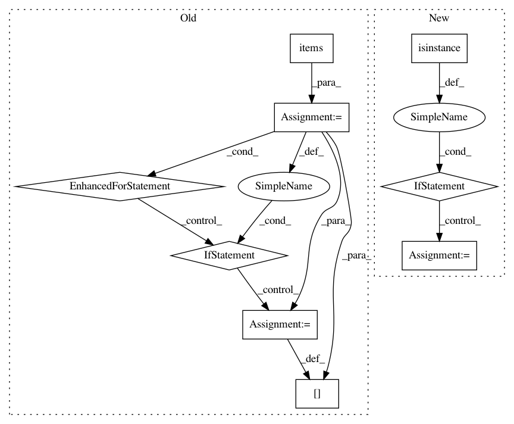

d55bad55b6a9e97f800c97c73038bc5ed8d4b31f,arviz/data/io_pystan.py,PyStanConverter,prior_to_xarray,#PyStanConverter#,201
Before Change
Convert prior samples to xarray.
nchain = self.fit.sim["chains"]
data = {}
for key, values in self.prior.items():
if len(values.shape) == 0:
values = np.atleast_2d(values)
elif len(values.shape) == 1:
if nchain == 1:
values = np.expand_dims(values, -1)
else:
values = np.expand_dims(values, 0)
values = np.swapaxes(values, 0, 1)
data[key] = values
return dict_to_dataset(data, library=self.pystan, coords=self.coords, dims=self.dims)
@requires("fit")
@requires("observed_data")
After Change
prior_predictive = self.prior_predictive
if prior_predictive is None:
prior_predictive = []
elif isinstance(prior_predictive, str):
prior_predictive = [prior_predictive]
ignore = prior_predictive + ["lp__"]
data = get_draws(prior, ignore=ignore)
In pattern: SUPERPATTERN
Frequency: 3
Non-data size: 9
Instances
Project Name: arviz-devs/arviz
Commit Name: d55bad55b6a9e97f800c97c73038bc5ed8d4b31f
Time: 2018-11-03
Author: ahartikainen@users.noreply.github.com
File Name: arviz/data/io_pystan.py
Class Name: PyStanConverter
Method Name: prior_to_xarray
Project Name: pyinstaller/pyinstaller
Commit Name: bf5b9d3d9401341983c28ccc694f9a251ea9ea5a
Time: 2015-09-01
Author: codewarrior@hawaii.rr.com
File Name: PyInstaller/utils/hooks/hookutils.py
Class Name:
Method Name: __exec_python_cmd
Project Name: facebookresearch/ParlAI
Commit Name: 72c304fa7cac16ed19d8bc75a017f17c8073dd2f
Time: 2020-02-13
Author: roller@fb.com
File Name: parlai/utils/misc.py
Class Name: TimeLogger
Method Name: log